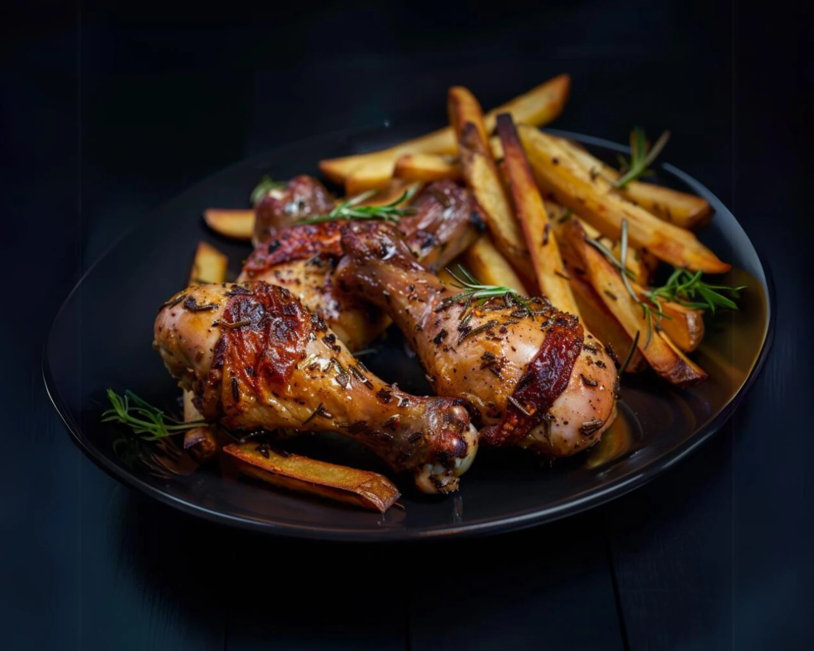

Home
Pan Fried Chicken Drumsticks

Description
Recipe from:
https://kitrusy.com/incredibly-easy-pan-fried-chicken-drumsticks/
Crispy skin and a juicy meaty inside, these simple pan-fried chicken
drumsticks are a hassle-free meal option.
Ingredients
- 2 lb chicken drumsticks bone in, skin on
- 1 tbsp extra light olive oil
- ½ tsp salt (to taste)
- ½ tsp ground black pepper
Steps
-
Ensure that your drumsticks are fully defrosted (if frozen) and bring
them to room temperature before patting them dry with a paper towel.
-
Mix all herbs and spices together, sprinkle them evenly over the
drumsticks and rub them into the drumsticks.
-
Heat a cast iron skillet or heavy-bottomed pan until hot but not smoking
and add the oil to the skillet. Then, add the drumsticks in one by one.
Your chicken should sizzle as soon as it touches the pan.
-
Cook for 7 minutes before rotating each drumstick ⅓ of the way and cook
for another 7 minutes before rotating a final ⅓ of the way and cooking
for a 7 more minutes. Your chicken should have an internal temperature
of 165°F to be fully cooked. See notes for larger drumsticks.
-
Remove your chicken from the skillet, rest for 5-10 minutes and enjoy!
- Store any leftovers in an airtight container for up to 5 days.